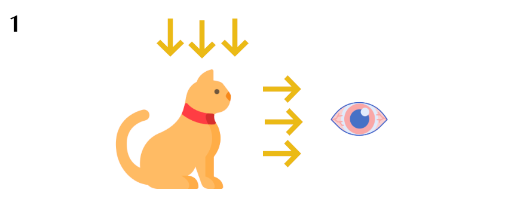
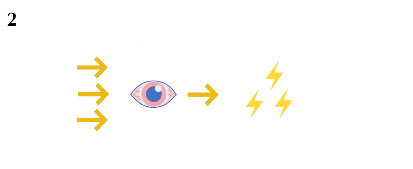
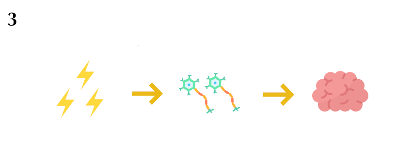
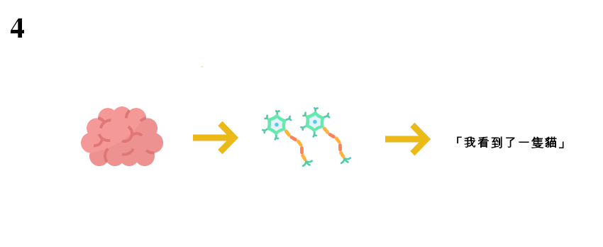
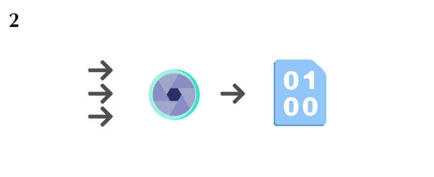
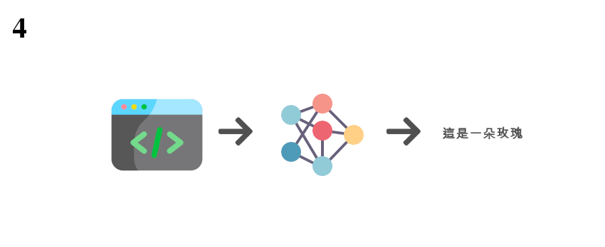
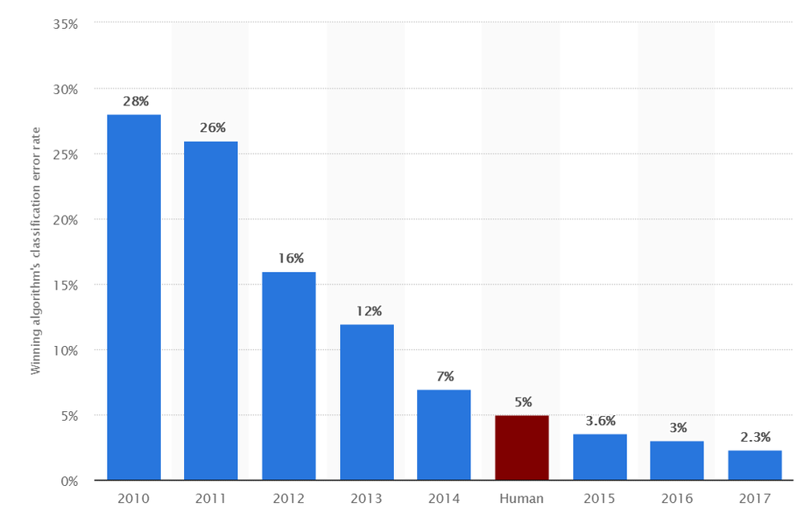

大家好~我是Tina
大家好，我是秉翰。
欸欸，秉翰，你知道CNN是什麼嗎？
CNN? 妳是說美國的有線電視新聞網嗎？
不是啦！是那個⋯⋯跟人工智慧有關的那個CNN！
喔，妳是在說「卷積神經網路」的英文簡寫啊。
沒錯沒錯！
聽說啊，卷積神經網路讓電腦看東西的能力變得很厲害呢！
對啊，有很多先進的人工智慧都有用到這項技術，
包括Google、Facebook等大公司也都有參與卷積神經網路的研究呢。
不過啊⋯⋯說到最基本的問題，到底電腦是怎麼看東西的呢？
真是個好問題。
我們就來看看，電腦看東西的方法，跟人類有哪些相同跟不同的地方吧。
GO >>
「人」是怎麼看東西的？
在了解機器是怎麼看東西之前，先來看一下，我們人類到底是怎麼看東西的吧！
視覺，可以說是人類最重要的感官之一。日本色彩學學者野村順一在其著作《色彩的秘密》中，提到五感的機能比例：視覺為87%、聽覺7%、觸覺3%、嗅覺2%、味覺1%。
由此可見，視覺對人類來說是一種非常重要的感官與資訊的來源。
那麼，在我們「看到」一個東西時，到底中間發生了什麼事呢？請看以下的例子：
當你在路上看到了一隻貓，並且在腦海中出現「我看到了一隻貓」這個念頭時。中間其實經過了好幾個步驟：
其中的第一步，就是需要有光線打在目標的物體上，然後反射到你的眼睛。（所以如果沒有光線的話是看不到東西的！）

第二步，當你的眼睛接收到這些光線，會透過眼睛中的瞳孔、虹膜、水晶體等構造，最後投射到視網膜上。接著，視網膜上許多的感光細胞接收到這些光線之後，
就會根據接收到的光線，產生不同程度的微弱電流，也就是電位訊號。

第三步，視網膜所產生的電位訊號會刺激與視網膜連結的視覺神經，這些視覺神經由成千上萬的神經細胞所組成，它們會將電流訊號一路傳遞到大腦。

第四步，大腦中負責處理視覺訊號的神經細胞會分析它們所接收到的電流訊號，最後產生出「我看到了一隻貓」的訊息。

大致上來說，這就是我們人類在「看到」一樣東西時，所實際經過的過程！
「機器」是怎麼看東西的？
與人類相比，機器或者電腦在看東西的時候，究竟又發生了哪些事呢？
在了解了人類是怎麼看東西的之後，接著就進入我們的主題，也就是「機器是怎麼看東西的？」
還有，機器機器在看東西的過程裡，又跟我們的主題：卷積神經網路有什麼關係呢？
不過，在探討這個問題之前，我們可能需要先定義一下，我們說機器「看」東西的時候，到底是什麼意思？這裡我們採取一個簡單的想法：
如果機器能對輸入的影像內容產生一定程度一定程度的理解，那麼應該就可以視為機器有「看到」並且「理解」它所看到的內容才對。
舉個例子：有一款手機APP叫做「SEEK」，它的功能是可以從你所拍攝的照片中，分辨出裡面到底有哪些植物或昆蟲。
這就可以當作你的機器（手機）看到了這些東西！
假設有一天，你在路上看到一朵花。而當你打開這個app，拍下花的照片時，你的app告訴你：這是一朵玫瑰。
在這個過程中發生了哪些事情呢？
第一步，理所當然的，機器也需要光線的反射。只是這次接收的這些光線的不是眼睛，而是手機機的鏡頭。
就像人類的眼睛有許多感光細胞，鏡頭裡面也有許多精密的感光元件，它們會將接收到的光線轉換為機器可以處理的數位訊號，也就是我們在手機中所看到的相片。這是第二步。

到了第三步，機器已經將看到的影像以數位訊號的方式儲存起來了，只是還沒有能力理解裡面的內容。
這時候就需要靠機器裡面的程式，模仿我們人類的大腦，來分析這些訊號。
這些程式也是各種不同的「人工智慧」發揮作用的地方！其中，當然也就包括了我們的卷積神經網路。
假設這個app所使用的程式（實際上也很有可能）是卷積神經網路的話。在第四步，相片的數位訊號就會透過卷積神經網路中，
模擬人類的「神經元」構造，經過一系列的運算，來判斷出它所看到的相片內容：一朵玫瑰花！

大致上來說，這就是機器在「看到」一樣東西時，所實際經過的過程。
至於卷積神經網路的細節，會在後面的章節有更詳細的介紹。
人跟機器看東西的方法雖然不太一樣，不過感覺過程中還是有些地方滿相似的！
對啊。如果說相機或鏡頭是機器的眼睛，那卷積神經網路就好像機器的神經細胞跟大腦，
這兩者結合在一起才讓機器可以順利地看到東西。
不過我的印象中，是不是除了卷積神經網路，還有其他程式也可以讓機器理解它所看到的東西呢？
確實是這樣沒錯。
這樣的話，卷積神經網路跟其他方法相比有什麼特別的嗎？
OK，那就讓我們來了解一下，其他方法到底有那些，
還有卷積神經網路跟他們相比有什麼優點吧。
GO >>
為什麼機器要用「卷積神經網路」來「看」？
只有卷積神經網路可以幫助機器了解照片嗎？為什麼只介紹這一種方法呢？
在前面提到，機器需要靠程式來解讀或理解影像中的內容，而卷積神經網路正是其中的一種程式架構。不知道在看到這邊時，讀者的心中會不會產生一些疑問，比方說：
除了卷積神經網路之外，還有什麼程式可以做到一樣的事情嗎？為什麼只特別介紹卷積神經網路呢？
其實這個問題的答案很簡單：因為卷積神經網路的效果最好！
不過，只用這樣一句話帶過可能太草率了點。因此我們在這邊會非常簡單的介紹一下，其他可以讓機器看東西的方法，
以及它們的效果到底有多少差距。
讓電腦理解它所看到的東西，傳統上叫做「電腦視覺」的領域；
直到近年來「機器學習」的發展，讓電腦可以從資料中自行學習；
之後又產生了「深度學習」，也就是在學習的過程使用更深、以及更複雜的架構。
我們可以把電腦看東西的方法，簡略的分為這三大類，圖示如下：
隨著科技的發展，電腦視覺與人工智慧的技術也不斷在進步，因此，越新的技術通常也代表著越好的性能。
雖然不是絕對，但一般來說，現在深度學習，特別是卷積神經網路(CNN)在這方面的表現是最好的。
那具體來說，卷積神經網路的性能到底有多好呢？我們可以從一個電腦視覺的比賽結果來比較一下，
這個比賽就是在電腦視覺與影像辨識領域非常有名的ILSVRC (ImageNet Large Scale Visual Recognition Competition)。
ILSVRC是一個從2010年開始舉辦的影像辨識比賽。
簡單來說，這個比賽就是給機器看數十萬張的照片，而機器要回答出每張照片裡面的物體是屬於哪一個種類。
可以參考下圖範例。

一般來說，對於這種輸入一張圖片，電腦要輸出它的內容是屬於什麼種類的任務被稱為「影像分類」。
也是在電腦視覺中一種很典型的任務。
ILSVRC從2010到2017的比賽中，每年最好的結果如下(柱狀圖的高度是錯誤率，越低表示越精準):

從圖中可以看到，在2010和2011年，這兩年的冠軍所使用的還是一般機器學習的方法，以SVM為主，但是結果仍有大約20%左右的錯誤率。
到了2012年，使用卷積神經網路的AlexNet拿到了比賽的冠軍，並且從2012年以後的冠軍所使用的都是卷積神經網路的架構。
從圖片中可以看到，從2012開始的錯誤率一路下降，到了2015年，機器的錯誤率已經低於一般人類，
表示著卷積神經網路在這種單純的影像分類任務中，已經有了可以與人類媲美、甚至超越人類的精準度！
最簡單的來講，優秀的性能就是卷積神經網路最大的特色，也是為什麼現在的機器在看東西、
在電腦視覺的領域裡，也幾乎都會使用卷積神經網路的原因。
這樣看起來，卷積神經網路真的很厲害呢！
是啊。現在最先進的電腦視覺，也幾乎都還是使用卷積神經網路的結構呢。
所以說，卷積神經網路實際上到底做了什麼，才能達到這麼好的效果呢?
就是在等妳問這個問題。
我們就來看看，卷積神經網路的特色，還有它厲害的地方吧。
GO >>